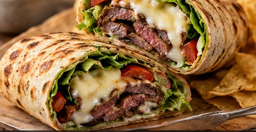

American · Lunch · Serves: 2 lunches Time: 30 minutes
Garlic-Herb Steak & Provolone Wraps

Ingredients
- 1 lb Sirloin or flank steak
- 4 Large flour tortillas
- 6 oz Provolone
- 1 large pepper, sliced Roasted bell pepper
- 2 cups Leaf lettuce
- 1/4 medium, very thinly Red onion sliced
- 1/2 cup Greek yogurt
- 1/4 cup Mayonnaise
- 2 Tbsp finely chopped Garlic chives
- 2 Tbsp finely chopped Genovese basil
- 1 Tbsp Lemon juice
- 1 tsp Dijon mustard
- 1 tsp Honey
- 1 small clove, grated Garlic
- 1 tsp Olive oil
- to taste Kosher salt & black pepper
Instructions
- Season steak generously with salt and pepper. Sear in a very hot skillet with olive oil until browned and cooked to preference. Rest 8 minutes, then slice thinly across the grain.
- Mix Greek yogurt, mayonnaise, garlic chives, basil, lemon juice, Dijon, honey and grated garlic. Season lightly with salt and pepper.
- Warm tortillas just enough to make them flexible. Spread each with garlic-herb sauce.
- Layer provolone, steak, roasted pepper, lettuce and a small amount of red onion. Roll tightly, tucking in the sides.
- For meal prep, wrap each tightly in parchment or foil. Keep chilled. If making all four wraps at once, use within 3 days; otherwise keep components separate and assemble the second day's wraps the night before.